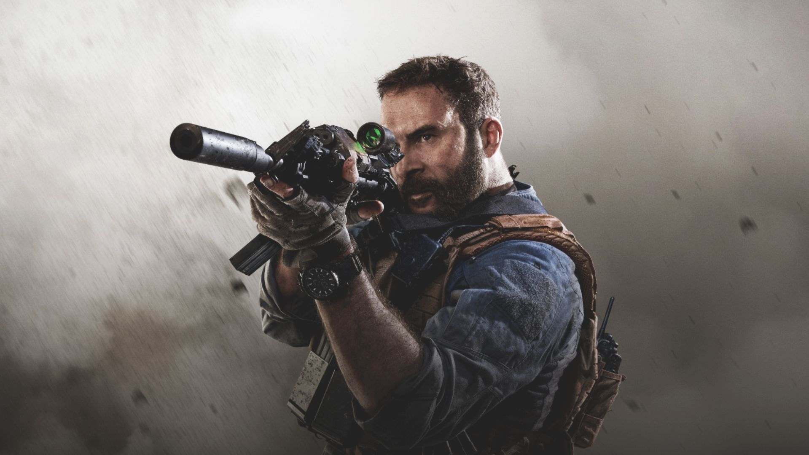

Our mission
Army of Fallen Angels is a tight knit, multi-game PS4 community focused on ensuring that all of our members have a family to game with. We were founded in 2019 in an attempt to build a community that is devoid of drama by allowing community input as well as offering full transparency on all decisions made. We aim to break into the competitive realm in the future and obtain sponsorships to benefit the community.
For our ambitious members, we have a military style ranking system that promotes leadership and encourages personal growth. And for our casual gamers, we have a laid back role that boasts the community connection without the responsibility of leadership.
AOFA members stay in fellowship with one another through Discord and participate in community events that currently include game nights, private tournaments, and prize giveaways.
We request that you be 18 or older (16 with waiver) and we hope that you’ll be willing to contribute to the growth of the community with any skills you may have! There are no tryouts or prerequisites to join, only a simple 10 question interview process. If you have the desire to grow with a new community or just game with a unique group of people, we’d love to chat with you about joining our family.
